Free · open in any browser · nothing to install
Every demo is a real simulation with exact physics. Open one on the projector, hand students the worksheet that goes with it, and work from your own readings.
Every demo on the site, by subject. Open a subject to see its demos. A demo can be under more than one topic; each is listed once per subject.
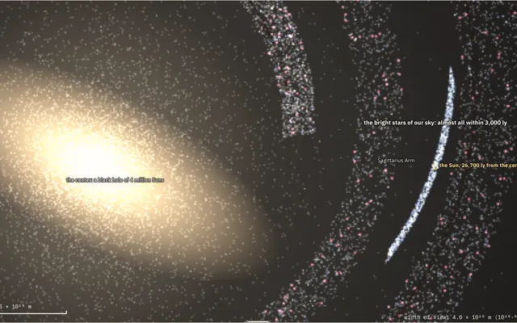
The first week toolkit: zoom through 42 powers of ten from the observable universe to a proton, exact unit conversions, dimensional analysis, significant figures and Fermi estimates.
3 worksheets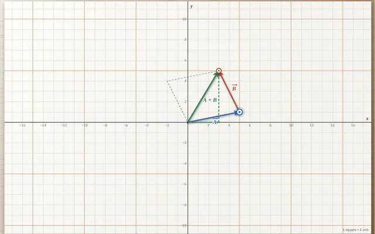
Drag arrow tips to see components, sums, differences, and dot and cross products, steer a boat across a river where its velocity adds to the current's, and balance hanging masses on a force table.
2 worksheets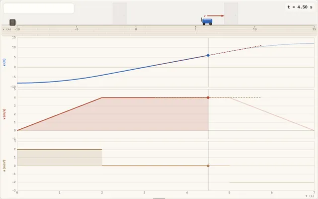
Position, velocity and acceleration graphs of a cart, linked: each is the slope of the one above and the area under it is the change in the one above. Then try to walk a target graph yourself.
1 worksheet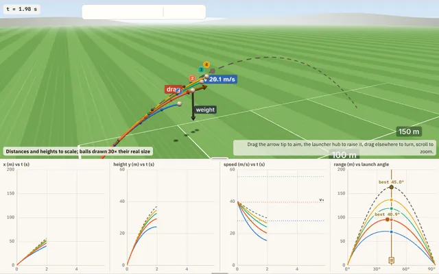
Fire baseballs, ping pong balls, cannonballs and more with and without air resistance, stack up to eight shots of different mass, size, drag or air density, and compare their paths and x, y and speed graphs side by side.
1 worksheet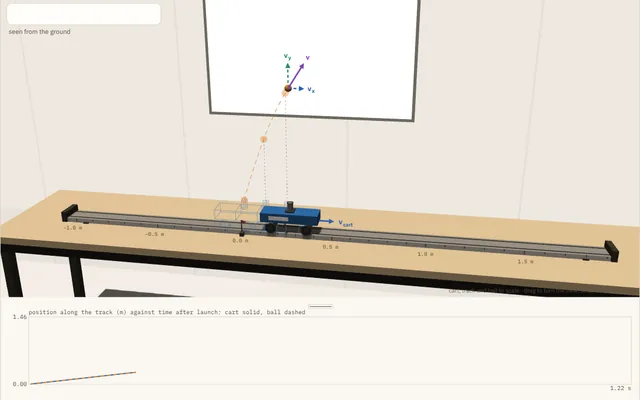
A cart fires a ball straight up. At constant speed the ball lands back in the launcher; make the cart speed up or brake and it misses. Watch from the ground or from the cart, with velocity vectors and strobe images.
1 worksheet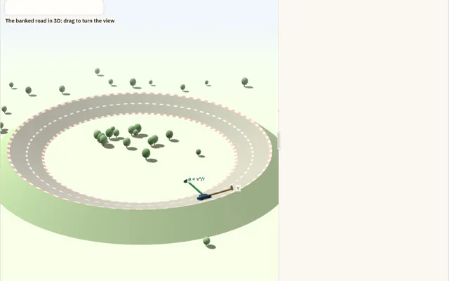
What supplies mv²/r? Whirl a ball on a string and cut it, take a car round a flat or banked curve until it slides, speed up or brake on the curve, and send a ball round a vertical loop, with the free body diagram for each.
1 worksheet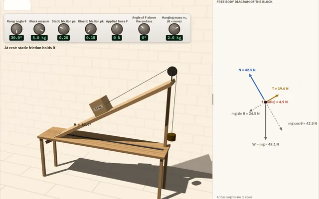
A block on a ramp you can tilt, push at an angle and tie to a hanging mass, with its free body diagram drawn to scale. Find where it slips, then time it to measure kinetic friction.
2 worksheets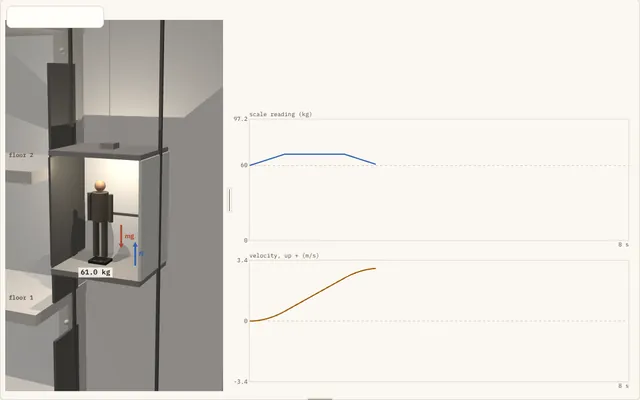
Ride an elevator standing on a scale. It reads more or less than your weight only while the elevator speeds up or slows down, and zero if the cable snaps.
1 worksheet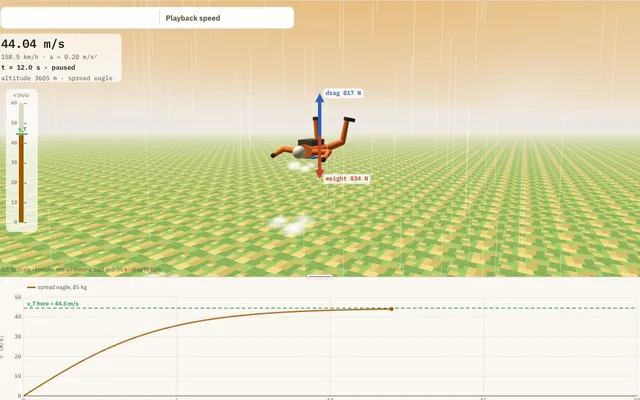
Jump with the textbook's skydiver and watch the drag grow until it matches the weight. Switch between spread eagle and head first, open the parachute, jump from 10 km where the air is thin, or drop stacks of coffee filters, and measure the terminal speed.
1 worksheet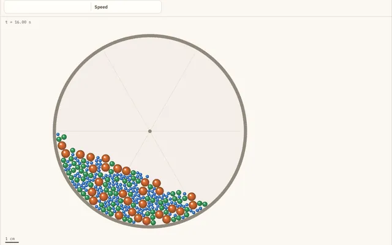
Sand of several kinds you choose (number, size, color, roughness, shape, material) in a rotating drum, a shaken box, a shear box, a landslide and a moving sand picture in liquid. Watch the sizes sort: small grains in the core of the drum, the Brazil nut rising, big stones on top of a slide.
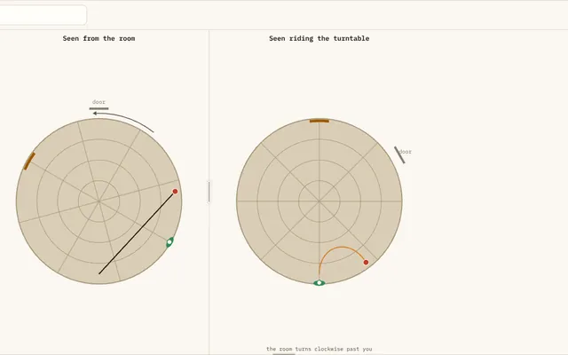
Roll a ball across a turning merry go round and see it from the room and from the turntable: a straight line, or a curve driven by the Coriolis and centrifugal forces. Then the Earth as a turntable: a Foucault pendulum whose swing turns once in a sidereal day divided by the sine of the latitude, flat and in 3D.
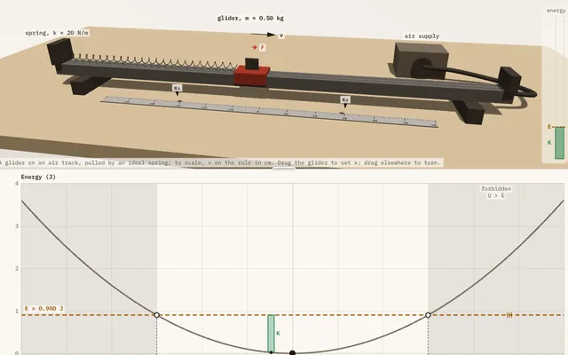
Read motion off a graph of U(x): drag the energy line and watch the particle speed up, slow down and turn around. Springs, roller coasters, a double well, a molecule, a pendulum, or a curve you draw yourself, with phase space.
1 worksheet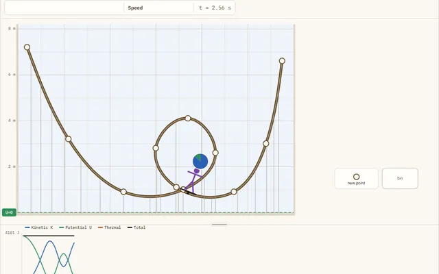
Shape a track and let a skater go: kinetic, potential and thermal energy trade places while the total stays fixed. Friction, loops, jumps, the U = 0 line you can move, and where the skater leaves the track.
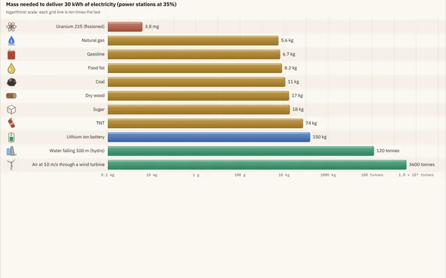
How much uranium, gas, coal, food, battery, falling water or wind it takes to supply a given amount of energy: energy per kilogram across eight powers of ten.
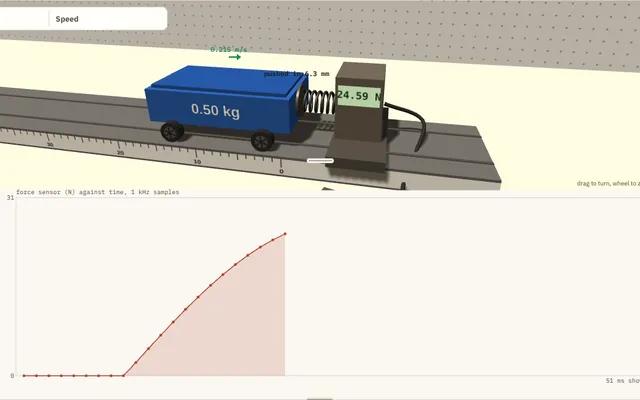
Bounce a cart off a force sensor and show that the area under the force against time graph equals its change of momentum. Soft and stiff bumpers give the same impulse with very different forces.
1 worksheet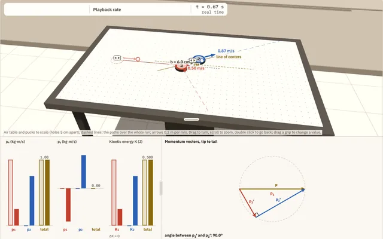
Crash carts on an air track and pucks on an air table: momentum is always conserved, kinetic energy only when the bounce is elastic. Also an explosion and Newton's cradle.
1 worksheet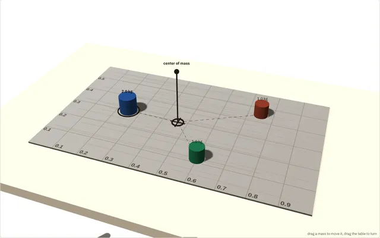
Find the center of mass of masses on a plate, watch a firework's pieces keep its center of mass on the original parabola, and walk along a boat that slides back.
1 worksheet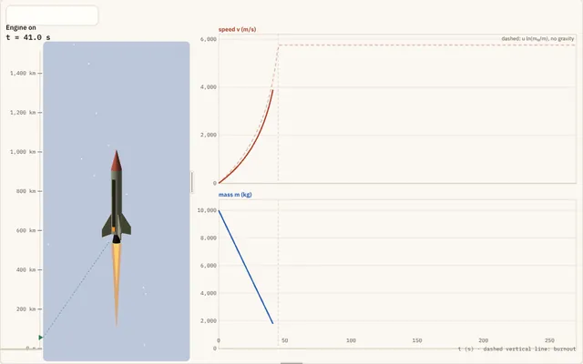
Burn fuel and watch the rocket get lighter and faster: the rocket equation in deep space, then a launch against gravity, a rocket too heavy to lift off at first, and why a slow burn wastes fuel.
1 worksheet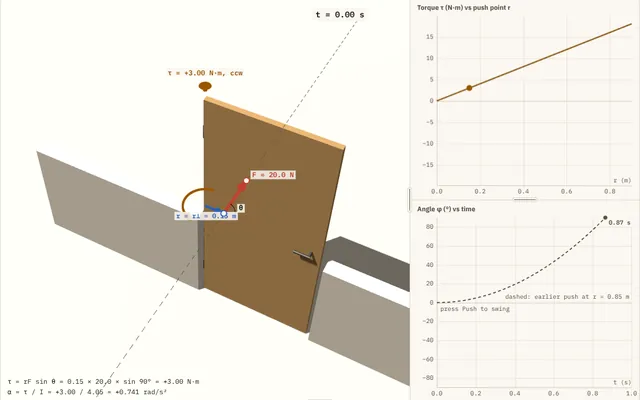
Push a door near the hinge and at the handle, race a hoop, disk and sphere down a ramp, throw a ball that skids until it rolls and trace the cycloid of a rolling wheel, race a yo-yo against a dropped one, spin a skater who pulls her arms in, and balance a seesaw.
1 worksheet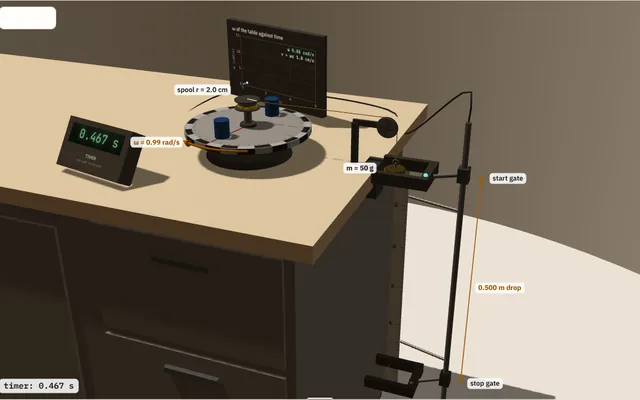
A falling mass spins a turntable. Time the drop, find the angular acceleration, and measure moments of inertia from a plot of torque against angular acceleration.
1 worksheet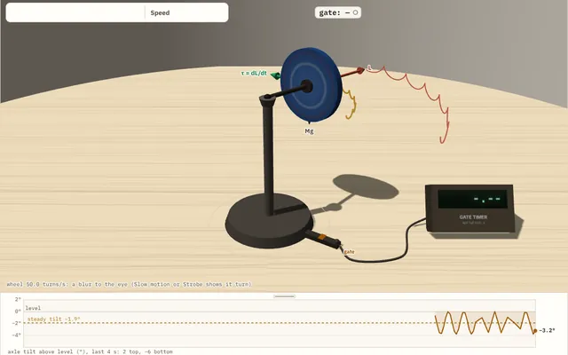
A spinning wheel held up at one end swings round instead of falling. See the torque turn the angular momentum, and measure how the precession rate depends on the spin.
2 worksheets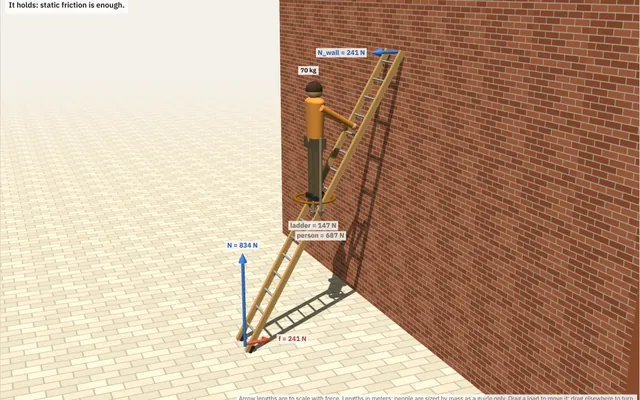
Balance a seesaw, walk a painter off the end of a plank until it tips, hang a sign from a strut and cable, and climb a ladder until it slips, with every force drawn to scale.
1 worksheet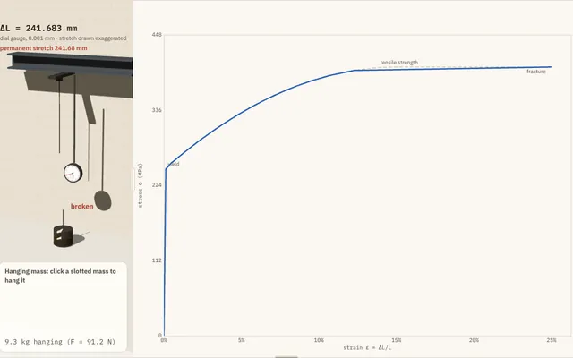
Hang loads on a thin metal wire and read the stretch on a dial gauge. Find Young's modulus from the straight part, then pass the yield point, see the wire stay longer, and load it until it snaps.
2 worksheets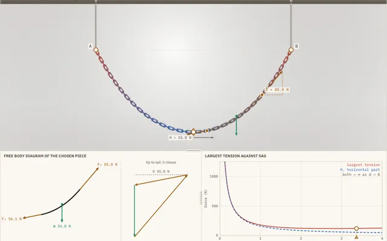
Drag the ends of a hanging chain and compare its catenary with a parabola, follow the tension along it, then flip it into an arch that stands in pure compression, like the Gateway Arch.
1 worksheet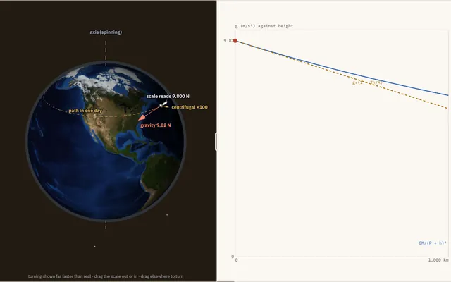
How g changes with height and latitude: from sea level to the space station and geostationary orbit, and how Earth's spin takes a little off at the equator.
2 worksheets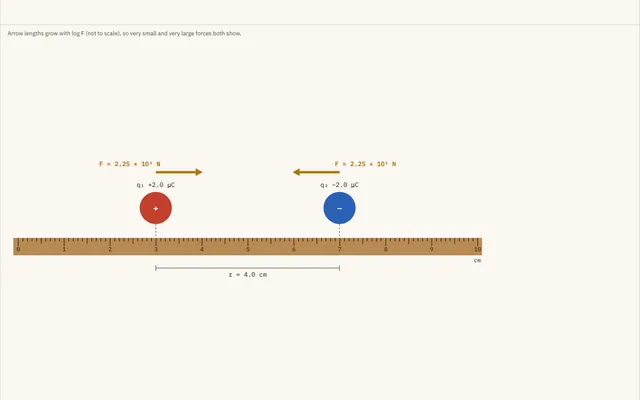
Two masses or two charges on a ruler: slide them apart, change their size, and read the equal and opposite forces. Record F at several distances and plot it against 1/r². Gravity, Coulomb, and Coulomb at the atomic scale.
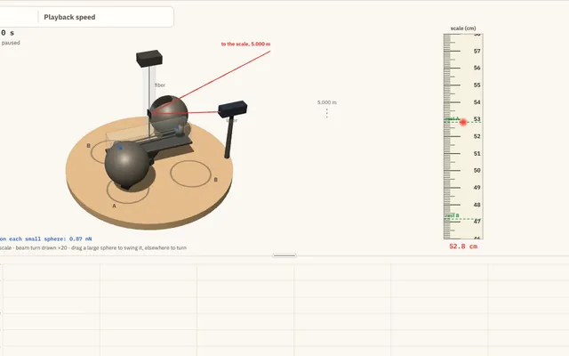
Swing two large lead spheres beside a torsion balance and watch a laser spot 5 m away creep a few centimeters as gravity twists the fiber; time the swing, find G, and weigh the Earth.
1 worksheet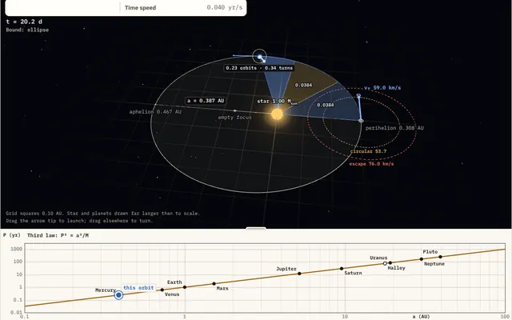
Launch a planet by dragging its velocity arrow. Watch ellipses form, equal areas sweep out in equal times, and the orbit land on P² = a³/M with the real planets.
2 worksheets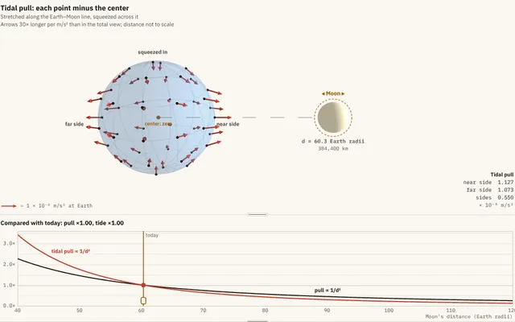
See why the Moon raises two ocean bulges, not one: subtract the pull at Earth's center from the pull everywhere else. Watch a city's tides over a day and spring and neap tides over a month.
2 worksheets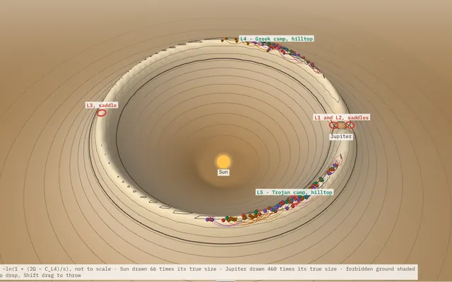
Drop or throw test particles in the rotating frame of two orbiting bodies: the five Lagrange points, zero velocity curves, Jupiter's Trojans, tadpole and horseshoe orbits, and halo style orbits near JWST's L2.
2 worksheets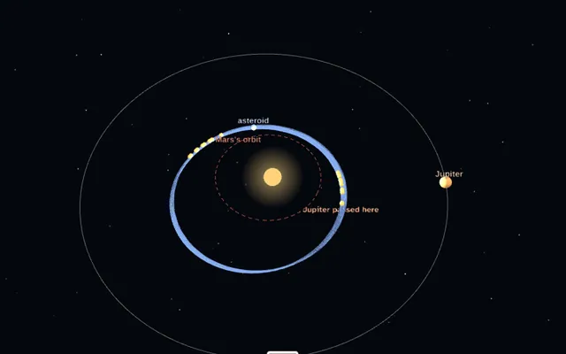
Watch Jupiter tug an asteroid at the same place orbit after orbit until its path crosses Mars's, beside the real counts that show the Kirkwood gaps. See how the same timing keeps Pluto safe from Neptune, and find Neptune from its pull on Uranus as Le Verrier did.
1 worksheet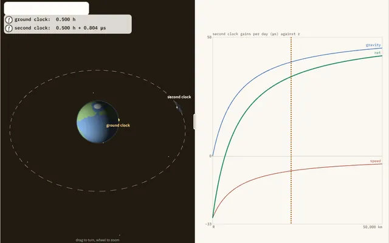
Why a GPS satellite's clock gains 38 microseconds a day: gravity makes higher clocks run fast, speed makes moving clocks run slow.
1 worksheet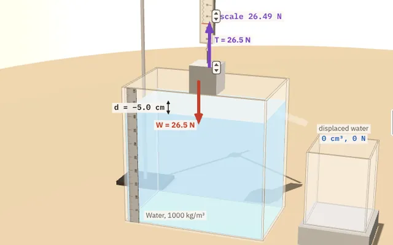
Drag a pressure probe down a tank, drop blocks that float or sink, weigh one in an overflow can like Archimedes, see an iceberg float 89% under, watch a Venturi tube trade pressure for speed, and aim Torricelli's jet.
1 worksheet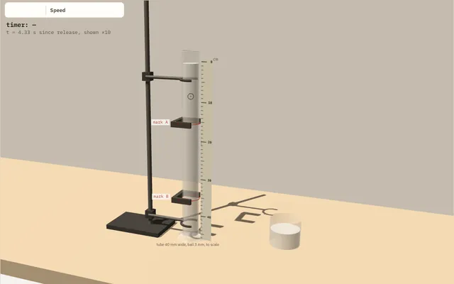
Time balls falling through glycerol, oil or water and measure viscosity with Stokes' law. Then find where it fails: tube walls and fast, high Reynolds number flow.
2 worksheets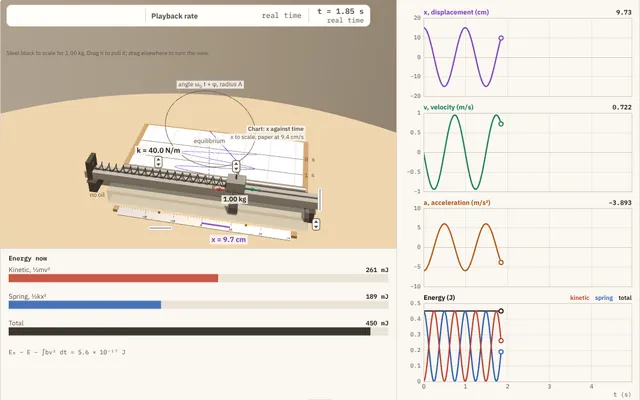
Pull a mass on a spring and let go: simple harmonic motion, a period that ignores the amplitude, three kinds of damping, a driven oscillator sweeping through resonance, and two coupled masses trading energy in beats.
2 worksheets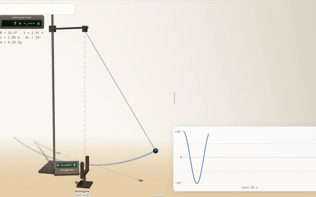
Time a pendulum with a photogate and measure g from how its period depends on length; mass doesn't matter, and a swinging rod beats a simple pendulum. Then swing it all the way to the top for the exact period and the phase portrait, and hang a second pendulum from the first: normal modes at low energy, chaos at high energy, 100 copies a millionth of a radian apart fanning out, and a Poincaré section.
2 worksheets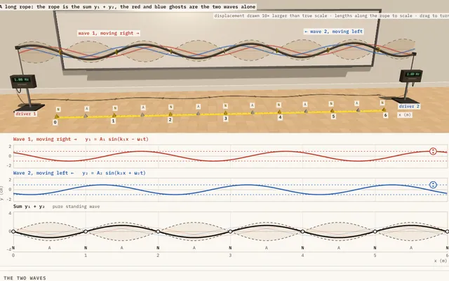
Add two traveling waves into a standing wave, find the harmonics of a guitar string, drive it into resonance, pluck it and see which harmonics vanish, and hear two close tones beat.
1 worksheet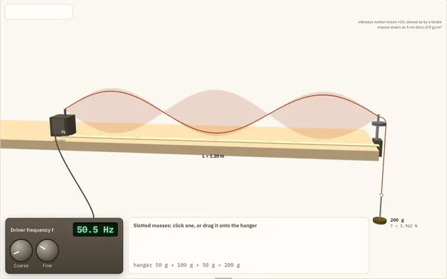
Hang masses on a string driven by a vibrator, or sweep the driving frequency with a fixed mass, find the resonances and count the loops, then get the string's mass per meter from the slope of f against n or T against 1/n².
1 worksheet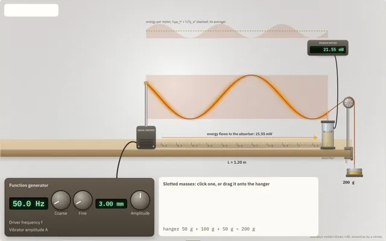
Send waves along a string into an absorber and read the power meter as you change the amplitude, the frequency and the tension, then find how the power a wave carries depends on each.
1 worksheet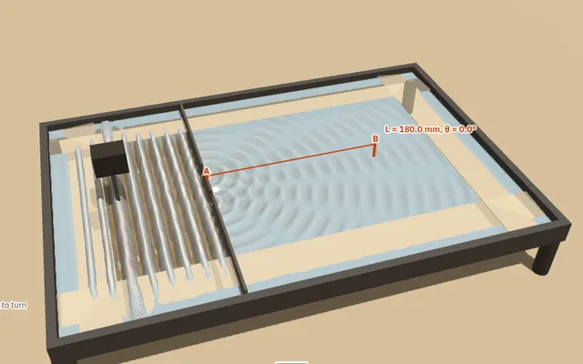
Make waves in a tank of water with dippers or a straight bar, draw your own walls and shallow plates, and watch waves spread through slits, interfere, reflect, refract and focus. Measure wavelength, speed and the angles of the quiet lines.
1 worksheet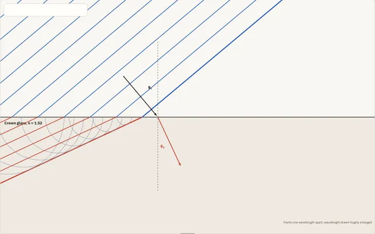
Race light through water, glass and diamond to see v = c/n, then build new wavefronts from wavelets to explain reflection, refraction and Snell's law, total internal reflection, and the spreading of a wave through an opening.
1 worksheet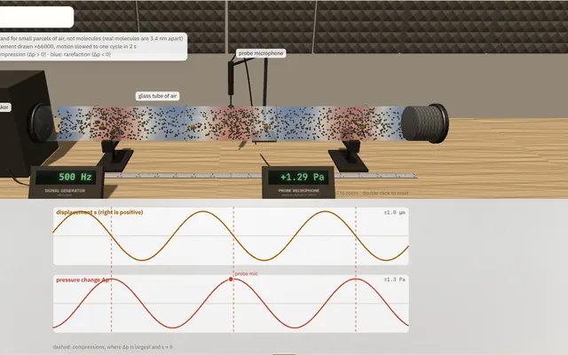
What a sound wave is: watch the air in a tube swing back and forth with the pressure a quarter cycle behind, then time a clap between two microphones to measure the speed of sound, and race sound through 25 gases, liquids and solids over a course up to 10 km long.
1 worksheet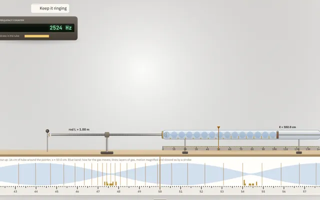
Stroke a metal rod and the cork dust in a tube of gas gathers at the nodes: one frequency, two wavelengths, and the speed of sound in both the gas and the metal.
1 worksheet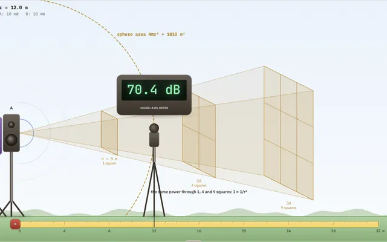
Walk a sound level meter away from a loudspeaker in an open field: the level drops 6 dB every time the distance doubles, and two equal sources add only 3 dB.
1 worksheet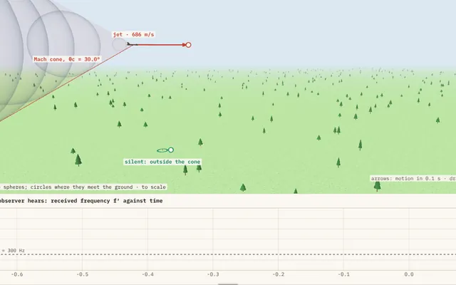
Drag a source and an observer through the wavefronts: hear an ambulance's pitch fall as it passes, break the sound barrier into a Mach cone and a sonic boom, then switch to light for redshift, blueshift and the transverse Doppler effect.
2 worksheets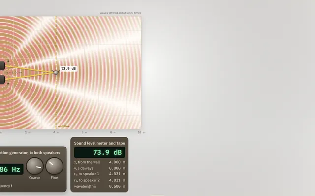
Walk a microphone across a room with two speakers playing the same tone, find the loud and quiet lines from the path difference, and get the wavelength and the speed of sound.
1 worksheet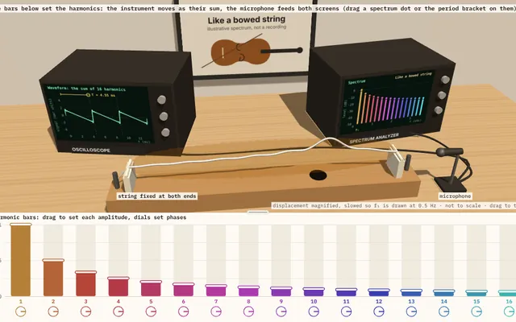
Build a tone from its harmonics and hear it: square, sawtooth and triangle waves, spectra like real instruments, the missing fundamental, and why phase barely matters.
1 worksheet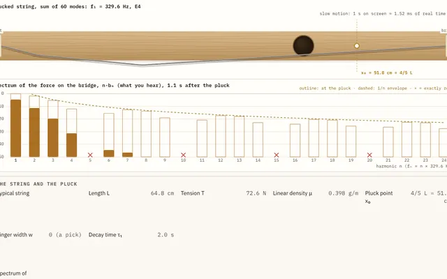
What sets an instrument's pitch: find the speed of sound with a resonance tube, pluck and bow a string, and blow across a bottle as you fill it, with sound.
1 worksheet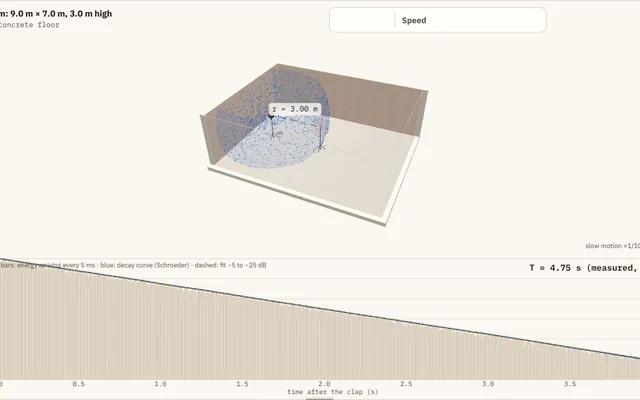
Clap in a hard room and time the echoes dying away, add absorbing panels and test Sabine's formula, then line the walls with wedges for an anechoic chamber with a clean 1/r² and a low frequency cutoff.
2 worksheets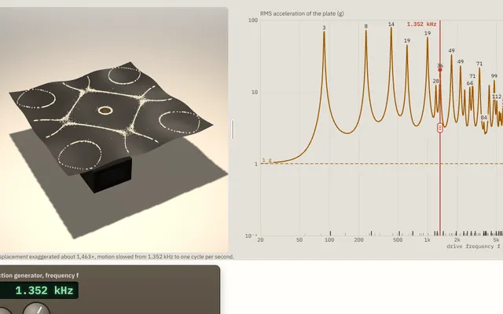
Drive a metal plate at its resonances and watch sand gather on the nodal lines: square and circular plates, a response curve with every mode, a 3D view and Chladni's law.
1 worksheetHold beads in midair with two bowls of 40 kHz speakers: traps in the standing wave, the Gor'kov force against gravity, and beads carried along by shifting the phase.
1 worksheetTime the echoes of an ultrasound pulse from the boundaries between fat, muscle and bone to find their depths, then point the beam at an artery and get the blood speed from the Doppler shift.
2 worksheetsHeat a crystal of argon atoms under a piston and watch the bonds between them break: the temperature holds still while it melts and again while it boils, because the heat goes into the bonds. A beaker view heats ice to steam with the textbook's specific and latent heats.
2 worksheetsJoin a hot block to cold water and watch them reach one temperature; calibrate a gas thermometer and extrapolate to absolute zero; measure a rod's expansion and water's odd behavior near 4 °C; and probe the temperature through a layered wall.
5 worksheetsWatch pressure and temperature emerge from molecules hitting the walls, speeds relax to Maxwell-Boltzmann, and a moving piston heat the gas. Then let two gases mix through a divider: measure diffusion from the mean square displacement and test Graham's law through a small hole.
3 worksheetsHeat a gas with its piston locked, then free: the same heat warms it less when it pushes the piston. Measure C_V, C_P and γ, tell an atom from a molecule, and find γ again from a ball bouncing on a flask of gas.
2 worksheetsRun an ideal gas around Carnot, Otto, Diesel, Stirling and Brayton cycles, or drag your own: the PV loop's area is the net work, a T–S diagram shows the heat, and no engine beats the Carnot limit. Reverse it for a refrigerator.
1 worksheetPull the partition and count why a gas never gathers back; let two Einstein solids share energy and watch heat flow from hot to cold; then test engines and refrigerators against the Kelvin and Clausius statements.
3 worksheetsExplore thermal emission across temperatures, test Planck’s spectrum, Wien’s displacement law and Stefan–Boltzmann scaling, and connect the results to visible color.
3 worksheetsSpins on a lattice that each favor their neighbors: cool through Tc and order appears on its own, with fractal domains at Tc, hysteresis, and heat capacity and susceptibility measured against Onsager's exact solution.
1 worksheetBalls fall through rows of pegs into bins: one ball is unpredictable, thousands make the binomial distribution and, with many rows, a bell curve. Set the rows and the chance of bouncing right; compare the counts with theory.
1 worksheetPump liquid helium below 2.1768 K and its boiling stops; then the fountain effect, a film that creeps out of a beaker, and the spinning disk experiment that measures how much of the liquid is superfluid. From measured properties of helium.
Cool a gas of atoms in a box from 1 µK toward absolute zero: each atom's wave packet grows to the thermal de Broglie wavelength, the packets overlap, and the atoms pile into one shared ground state. Exact Bose–Einstein occupations of the box levels, an energy ladder, the phase of the wavefunction as color, the velocity picture of 1995 and the condensate fraction curve.
Charge two metal spheres without touching them: bring a charged rod near, separate the spheres or ground one, then take the rod away. Every mark on the spheres comes from an exact electrostatics solution.
2 worksheetsDrag point charges and watch the field lines, equipotentials and potential update live, as a 2D map or a rotatable 3D landscape.
1 worksheetTwo masses or two charges on a ruler: slide them apart, change their size, and read the equal and opposite forces. Record F at several distances and plot it against 1/r². Gravity, Coulomb, and Coulomb at the atomic scale.
Drag charges in and out of a Gaussian surface of any shape and watch the flux: Qenc/ε₀ from a real numerical surface integral, zero for charges outside. Then the sphere, line and plane derivations step by step.
1 worksheetA Van de Graaff dome charging until the air breaks down, an ink jet printer steering charged drops onto paper, a smokestack precipitator pulling charged dust out of a gas flow, and a shuffle across a rug that ends in a spark at the doorknob.
3 worksheetsPull the plates apart and slide in a dielectric with the battery connected or not, and follow Q, V, E, C and the energy, including the work your hand does. Field lines come from a real solution with fringing at the edges.
1 worksheetSpray oil drops between charged plates, time them falling and rising through the telescope, work out each drop's size and charge, and find that charge comes in whole numbers of e.
Build any circuit, from Ohm's law and voltage dividers to rectifiers and transistor amplifiers: batteries, bulbs, meters, capacitors, inductors, diodes, LEDs and junction transistors, in DC, in time or with AC.
7 worksheetsSlide a clip along a wire, read the voltmeter and work out its resistance. Change length, thickness, metal and temperature, then fit your readings to find the resistivity and its temperature coefficient.
2 worksheetsA 120 V kitchen branch circuit with hot, neutral and ground wires: overload it, short it, or let a worn cord touch a metal case, and see when the breaker or the GFCI trips and what a person feels.
1 worksheetTwo coils on an iron core: change the turns and the load and watch V_S/V_P follow N_S/N_P on live traces, switch to a real core with leakage and winding resistance, then send power down a long line and see the I²R loss fall as 1/V².
1 worksheetLaunch protons, electrons and alphas into a magnetic field and watch them circle at a period that doesn't depend on speed. Build a velocity selector, a mass spectrometer that separates neon isotopes and a cyclotron, trap protons in a magnetic bottle, and watch the Hall voltage build up in a strip.
1 worksheetWeigh the force on a current carrying wire with a magnet on a balance and find B, then see the forces on a loop make a torque, and add a commutator to build a DC motor.
1 worksheetDrag wires and watch their fields add and the forces between them, test Ampère's law on any loop with a numerical integral, and bend the current into a loop or a solenoid computed exactly from Biot–Savart.
3 worksheetsFill a long solenoid with aluminum, bismuth, liquid oxygen, water or iron and compare B with the coil's own field: tiny para and diamagnetic changes, the field needed to float water, and iron's hysteresis loop.
1 worksheetBend an electron beam into a glowing circle with Helmholtz coils, read its radius on the mirrored scale without parallax, and measure the charge to mass ratio.
1 worksheetRide along with a charge beside a current and length contraction turns the magnetic force into an electric one. Then Einstein's magnet and loop, the field of a fast charge, and how E and B transform.
1 worksheetDrop a magnet onto a puck of cold superconductor and watch it float; cool the puck with the magnet nearby and the magnet is locked in place, even hanging underneath. Currents in the puck computed ring by ring with the Bean critical state model.
Watch a magnetic field enter a type II superconductor one flux quantum at a time: a perfect triangular lattice with no defects, field piling up at the faces when defects pin the vortices, and flux left trapped when the field is taken away.
Push a magnet into a coil and watch the flux, EMF and current, with the coil pushing back. Move it fast or slow and the same total charge flows. Spin a generator coil and slide a bar along rails.
1 worksheetA long solenoid seen end on with a changing current: the electric field it induces circles the axis, inside and in the empty space outside. Drag a closed path and compare the circulation of E with the rate of change of flux.
1 worksheetThree devices that run on Faraday's law: shake a magnet through a coil to charge a flashlight, draw with a magnetic pen on a grid of wires, and swipe a card's magnetic stripe past a reading head.
1 worksheetDrop a strong magnet down copper, aluminum and plastic pipes side by side. Currents induced in the metal walls push back by Lenz's law, and the magnet drifts down at a slow terminal speed.
1 worksheetCharge a capacitor and move an Amperian loop along the wire and into the gap. Stretch its surface between the plates and see why Maxwell added ε₀ dΦE/dt to Ampère's law.
1 worksheetA plane wave in 3D with E, B and the Poynting vector, polarization from linear to circular, the energy and pressure of sunlight and a laser, the full spectrum, and a dipole antenna launching waves with exact field lines.
2 worksheetsDrag lenses, mirrors, prisms and light sources. Rays bend and bounce live, and images form where they cross.
4 worksheetsWatch the eye change its power to keep an image on the retina, find the near and far points of normal, nearsighted, farsighted and older eyes, and prescribe the glasses that correct them.
2 worksheetsPut lenses and stops on a rail and look through them with an eye or a camera: find each image, the magnification, the exit pupil, the field of view and how bright the view is, for a magnifier, a microscope or a telescope of your own design.
1 worksheetWhy a real telescope blurs a star, computed: the image is the diffraction pattern of the aperture with the wavefront error found by tracing real rays. Spherical and parabolic mirrors, coma off the axis, a pinched mirror, a single lens against an achromat, Hubble's 1990 flaw and its fix, and moving air with adaptive optics. Then a mystery telescope to diagnose and fix.
1 worksheetSend light through polarizers and wave plates and watch the electric field after each one: Malus's law, the three polarizer surprise, circular light from a quarter wave plate, and glare at Brewster's angle.
1 worksheetFoucault's rotating mirror bench: spin the mirror, read the shifted image on the microscope micrometer, and fit your readings for c.
1 worksheetMix red, green and blue lamps, compare a single wavelength, or put a filter in front of a white bulb, and watch the three cone signals that decide the color you see. Includes metamers and single photons.
1 worksheetFollow sunlight through a raindrop and find the ray of least deviation that makes the bow at 42°, then see the sky: the primary and the reversed secondary bow, Alexander's dark band, the Sun's height, and in 3D the cone of drops that makes your own rainbow.
Race light through water, glass and diamond to see v = c/n, then build new wavefronts from wavelets to explain reflection, refraction and Snell's law, total internal reflection, and the spreading of a wave through an opening.
1 worksheetFire photons, electrons or buckyballs through two slits one at a time. Single dots pile up into fringes, and a which slit detector washes them out.
2 worksheetsSee why soap bubbles and oil slicks are colored: two reflections from a thin film add or cancel, computed exactly with the reflected color of white light, plus the black film, air wedge fringes, Newton's rings and anti reflection coatings.
1 worksheetSplit a laser beam, send the halves to two mirrors and recombine them: count fringes as a micrometer moves one mirror to measure a wavelength, pump the air out of a gas cell to measure its index of refraction, and find equal paths with white light fringes.
1 worksheetShine lasers, an RGB module, white light or H, He, Ne, Hg and Na lamps through gratings from 100 to 1000 lines/mm, a CD or a DVD. See the orders land on the wall, overlapping rainbows and missing orders, then measure a spot with calipers to find the wavelength.
2 worksheetsLight through a round hole makes an Airy pattern, computed exactly. Measure its first dark ring on a screen, then bring two point sources together until they blur into one: Rayleigh's criterion for an iris, the eye and a car's headlights, the Hubble telescope and a camera lens stopped down.
2 worksheetsRecord the fringes a reference beam and an object's light make on a plate, measure their spacing under a microscope, then light the developed plate again and find the virtual image, the real image and the straight through beam, computed exactly; change the color and watch the images move.
1 worksheetMake waves in a tank of water with dippers or a straight bar, draw your own walls and shallow plates, and watch waves spread through slits, interfere, reflect, refract and focus. Measure wavelength, speed and the angles of the quiet lines.
1 worksheetPlace events on a Minkowski diagram and change observers. Light cones stay at 45° while simultaneity, clocks and lengths change, through the train, the rod and the twin paradox.
1 worksheetTime a probe fired from a fast rocket, push a particle with a steady force, and time electrons over 8.4 m as Bertozzi did: velocities don't simply add, momentum is γmv and kinetic energy is (γ − 1)mc².
3 worksheetsRide along with a charge beside a current and length contraction turns the magnetic force into an electric one. Then Einstein's magnet and loop, the field of a fast charge, and how E and B transform.
1 worksheetWhy a GPS satellite's clock gains 38 microseconds a day: gravity makes higher clocks run fast, speed makes moving clocks run slow.
1 worksheetFoucault's rotating mirror bench: spin the mirror, read the shifted image on the microscope micrometer, and fit your readings for c.
1 worksheetShine light on a metal, find the stopping voltage, and measure Planck's constant from the slope, the way Millikan did in 1916.
1 worksheetA photon bounces off a free electron and comes away with a longer wavelength. Drag the scattered photon around to see the shift, the electron's recoil and the momentum triangle, from Compton's 1923 X-rays to cesium 137 gamma rays and the Compton edge.
1 worksheetFire photons, electrons or buckyballs through two slits one at a time. Single dots pile up into fringes, and a which slit detector washes them out.
2 worksheetsFire electrons through graphite, measure the two rings on the tube's screen at several voltages, and find the lattice spacings from de Broglie's λ = h/p.
2 worksheetsLaunch an electron at a barrier and watch part of it tunnel through, settle into energy eigenstates in a box or an oscillator, and collapse when you measure where it is.
3 worksheetsSweep the accelerating voltage across a mercury tube and watch the collector current drop every 4.9 V, then mark the peaks and fit their spacing like in the lab. Switch to neon to see glowing layers march toward the cathode.
1 worksheetExplore thermal emission across temperatures, test Planck’s spectrum, Wien’s displacement law and Stefan–Boltzmann scaling, and connect the results to visible color.
3 worksheetsAn ordinary coin beside a quantum coin in a superposition, then the spin of an atom on a Bloch sphere and Stern–Gerlach magnets in a row. Measure many and compare the counts with |amplitude|².
1 worksheetSpray oil drops between charged plates, time them falling and rising through the telescope, work out each drop's size and charge, and find that charge comes in whole numbers of e.
Every hydrogen state up to n = 6 as a 3D cloud sampled from |ψ|², a slice showing its nodes, and its radial probability against the Bohr orbit. Mix 1s and 2p and watch the charge slosh at the Lyman α frequency.
1 worksheetClick any of 99 elements to see its emission or absorption lines, measured by NIST. Includes the Bohr model of hydrogen and a mystery spectrum game, including a star.
3 worksheetsAn orbiting electron is a tiny current loop. See its moment point only in allowed directions, split a beam of silver atoms into two spots as Stern and Gerlach did, and split spectral lines in a magnet.
3 worksheetsFill orbital boxes one electron at a time and watch the periodic table build up, see where the n + l rule fails, then fire electrons at a target and read its X-ray lines, the Duane–Hunt cutoff and Moseley's law.
3 worksheetsTune an electron or proton spin resonance probe, sweep the field, find the absorption peak on the oscilloscope, and measure g for DPPH and the gyromagnetic ratios of hydrogen and fluorine.
1 worksheetA photon can make an excited atom emit an exact copy of itself. See why there is no laser without population inversion, find the threshold of an Nd:YAG laser, watch it spike as it switches on, compare ruby, Nd:YAG and He–Ne levels, and count cavity modes.
1 worksheetPull a sodium ion from a chloride ion and stretch the bond of H₂ to see what holds molecules together, then climb the ladder of vibration and rotation levels and measure the infrared band of HCl to find its bond length and the stiffness of its bond.
2 worksheetsAdd up every ion in a salt crystal to find its lattice energy, squeeze a chain of atoms until its levels spread into bands, dope silicon and warm it from 20 K to 800 K, then measure a pn junction's current and the colors of LEDs.
4 worksheetsCool a lead sphere in a magnetic field and watch the field lines leave it, unlike a mere perfect conductor; then map the critical field against temperature and identify a mystery metal.
1 worksheetDrop a magnet onto a puck of cold superconductor and watch it float; cool the puck with the magnet nearby and the magnet is locked in place, even hanging underneath. Currents in the puck computed ring by ring with the Bean critical state model.
Watch a magnetic field enter a type II superconductor one flux quantum at a time: a perfect triangular lattice with no defects, field piling up at the faces when defects pin the vortices, and flux left trapped when the field is taken away.
Pump liquid helium below 2.1768 K and its boiling stops; then the fountain effect, a film that creeps out of a beaker, and the spinning disk experiment that measures how much of the liquid is superfluid. From measured properties of helium.
Cool a gas of atoms in a box from 1 µK toward absolute zero: each atom's wave packet grows to the thermal de Broglie wavelength, the packets overlap, and the atoms pile into one shared ground state. Exact Bose–Einstein occupations of the box levels, an energy ladder, the phase of the wavefunction as color, the velocity picture of 1995 and the condensate fraction curve.
Fire alpha particles at a gold nucleus one at a time or as a beam, count them by angle against 1/sin⁴(θ/2), and see why Thomson's plum pudding atom can never send one back.
1 worksheetThe curve of binding energy from 2,550 measured AME2020 masses: why fusing light nuclei and splitting heavy ones both release energy, why stars stop at iron, the liquid drop model term by term, magic numbers and the chart of nuclides.
1 worksheetA grid of nuclei that each decay at random, and a count that halves every half life anyway. Carbon 14 dating, iodine 131 and decay chains where a daughter builds up and dies away.
4 worksheetsBalance a nuclear reaction and weigh it with AME2020 masses to find Q and the threshold energy; grow a chain reaction and find the critical size of a uranium or plutonium sphere; see how the Gamow peak lets the Sun fuse protons at 15 million kelvin; measure the dose from a gamma source with distance and shielding.
5 worksheetsA virtual NaI(Tl) spectrometer in a lead castle: set the high voltage and gain, acquire Cs-137, Co-60, Na-22 or Ba-133 spectra on a multichannel analyzer, mark peaks, calibrate, measure resolution and lead attenuation, and identify an unknown source.
2 worksheetsThe Standard Model and its particles with PDG 2024 data; test decays and collisions against the conservation laws and name the force that drives them; build hadrons from colored quarks and predict the Ω⁻; then fit tracks in a bubble chamber and weigh a K⁰ or Λ⁰ from its decay.
3 worksheetsEarth's tilted axis, the Sun's path across your sky, day length and sunlight through the year, and why distance from the Sun is not the reason.
3 worksheetsThe real night sky from any place and date, seen from outside as a sphere and from the ground: why the stars circle the pole, why the pole's height is your latitude, the Sun and Moon among the stars, eclipses and the wandering pole star.
2 worksheetsDrag the Moon around Earth and see its phase from the ground, when it rises and sets, and why eclipses only happen in eclipse seasons.
2 worksheetsWatch Earth pass Mars while Mars loops backward against the real stars, then make the same sky with Ptolemy's epicycles, Copernicus's circles and Tycho's system, and test them with the phases of Venus.
1 worksheetFollow sunlight through a raindrop and find the ray of least deviation that makes the bow at 42°, then see the sky: the primary and the reversed secondary bow, Alexander's dark band, the Sun's height, and in 3D the cone of drops that makes your own rainbow.
Roll a ball across a turning merry go round and see it from the room and from the turntable: a straight line, or a curve driven by the Coriolis and centrifugal forces. Then the Earth as a turntable: a Foucault pendulum whose swing turns once in a sidereal day divided by the sine of the latitude, flat and in 3D.
Put lenses and stops on a rail and look through them with an eye or a camera: find each image, the magnification, the exit pupil, the field of view and how bright the view is, for a magnifier, a microscope or a telescope of your own design.
1 worksheetDrag lenses, mirrors, prisms and light sources. Rays bend and bounce live, and images form where they cross.
4 worksheetsLight through a round hole makes an Airy pattern, computed exactly. Measure its first dark ring on a screen, then bring two point sources together until they blur into one: Rayleigh's criterion for an iris, the eye and a car's headlights, the Hubble telescope and a camera lens stopped down.
2 worksheetsWhy a real telescope blurs a star, computed: the image is the diffraction pattern of the aperture with the wavefront error found by tracing real rays. Spherical and parabolic mirrors, coma off the axis, a pinched mirror, a single lens against an achromat, Hubble's 1990 flaw and its fix, and moving air with adaptive optics. Then a mystery telescope to diagnose and fix.
1 worksheetA plane wave in 3D with E, B and the Poynting vector, polarization from linear to circular, the energy and pressure of sunlight and a laser, the full spectrum, and a dipole antenna launching waves with exact field lines.
2 worksheetsClick any of 99 elements to see its emission or absorption lines, measured by NIST. Includes the Bohr model of hydrogen and a mystery spectrum game, including a star.
3 worksheetsExplore thermal emission across temperatures, test Planck’s spectrum, Wien’s displacement law and Stefan–Boltzmann scaling, and connect the results to visible color.
3 worksheetsWatch a spinning cloud collapse into a disk, find the frost line where ice can form, grow planetesimals into rocky planets and giant cores, and see which early planetesimals melt and grow iron cores.
1 worksheetMove a planet nearer or farther from its star, change how much light it reflects and how much heat its air traps, and match the measured temperatures of Mercury, Venus, Earth, the Moon and Mars. Then find the habitable zone around the Sun and two red dwarfs, and see which worlds can keep their air.
2 worksheetsWeigh a planet's iron core from its mean density and moment of inertia, watch a mantle churn into moving plates or under one stiff lid, and float continents on the mantle.
1 worksheetDrop an asteroid on the Moon, Mercury, Venus, Earth or Mars and see its crater, from a bowl to a basin with a ring of peaks. Count craters to date lunar and Martian surfaces with the crater clock, and cool a Moon, a Mars and an Earth to see why small worlds go quiet first.
2 worksheetsJupiter, Saturn, Uranus and Neptune to scale; push a moon inside Saturn's Roche limit and watch it come apart into a ring; follow Io, Europa and Ganymede in their 1:2:4 resonance and the tides that heat Io; and find where water, ammonium hydrosulfide, ammonia and methane condense into cloud decks.
1 worksheetWatch Jupiter tug an asteroid at the same place orbit after orbit until its path crosses Mars's, beside the real counts that show the Kirkwood gaps. See how the same timing keeps Pluto safe from Neptune, and find Neptune from its pull on Uranus as Le Verrier did.
1 worksheetWatch a planet tug its star and cross its face, with the transit light curve and radial velocity curve drawing live. See why Earth twins are so hard to find.
3 worksheetsFollow a star of any mass across the HR diagram from the main sequence to a cooling white dwarf or a supernova, and date a star cluster from its turnoff.
2 worksheetsCut a real MESA star model in half and zoom from the envelope to the core: composition, convection zones, burning shells, and a white dwarf crystallizing from the center out.
Watch a white dwarf fade: Mestel's cooling law, the core freezing from the center out once the ion coupling reaches 175, the latent heat that slows it, the Gaia Q branch and white dwarfs as a cosmic clock.
1 worksheetSlide a galaxy behind a lens to make an Einstein ring, watch a microlensing event brighten, ray trace a black hole's shadow exactly, and see what gravity does to clocks, light and a person near Sagittarius A* and a stellar black hole.
1 worksheetMeasure a parallax from two photos, time a Cepheid's light curve, find a supernova's peak, and fit Hubble's law to galaxy redshifts. Each rung calibrates the next.
4 worksheetsStars far from a galaxy's center orbit as fast as those near it, though the visible matter says they should slow down. Build the curve from a bulge, disk, gas and a dark matter halo, measure it with Doppler shifts, and compare the Milky Way and NGC 3198.
1 worksheetWatch every galaxy move away from every other as space stretches and time the distances to find Hubble's law and the age of the universe. Follow the temperature from the first instant to today, make the helium of the first three minutes, and stretch the glow of decoupling into the 2.7 K microwave background.
3 worksheetsHow X-rays and gamma rays are stopped: the NIST coefficients of any element or tissue from 1 keV to 100 MeV split into coherent, Compton, photoelectric and pair, where each one wins, a Monte Carlo beam through a slab for buildup, and beam hardening with half value layers.
1 worksheetSend protons, alpha particles or carbon ions into water, through bone, lung, plastic or metal first. Watch the tracks slow, scatter and stop, build the Bragg peak from them, and compare the Bethe stopping power and CSDA range with NIST PSTAR.
1 worksheetWatch collision kerma and absorbed dose part in the buildup and run together past it, with Monte Carlo histories; collect the ions in a Farmer chamber against its voltage; and calibrate a proton beam step by step as TRS-398 does it: temperature and pressure, polarity, recombination and k_Q.
2 worksheetsHow many cells survive a dose: linear quadratic survival curves in air and without oxygen, a simulated clonogenic assay to count and fit, BED and EQD2 for 1 to 40 fractions, and the RBE of protons against LET and dose.
1 worksheetA proton beam's depth dose in water, muscle, fat or bone: move the peak with the energy, stack weighted energy layers into a spread out Bragg peak over a target, and compare it with a measured 6 MV photon beam.
1 worksheetRun the morning QA of a pencil beam scanning proton machine (output, range, spot position and size against TG-224 tolerances), follow a drifting machine over weeks, and check a patient plan with a 2D chamber array and gamma analysis.
1 worksheetCalibrate a CT scanner for proton planning: scan a phantom of known plastics, turn CT numbers into stopping power ratios with Schneider's stoichiometric method, test the curve with a mystery tissue in a proton beam, and see how CT number and I value errors move the range in a patient against a 3.5 % + 1 mm margin.
1 worksheetDesign the walls of a CT room, a linear accelerator vault with its maze door, and a proton therapy room, and compare how lead, steel, concrete and polyethylene do at each energy.
1 worksheetTime the echoes of an ultrasound pulse from the boundaries between fat, muscle and bone to find their depths, then point the beam at an artery and get the blood speed from the Doppler shift.
2 worksheetsA chemical clock: a stirred beaker oscillates on a limit cycle, an unstirred dish carries target and spiral waves, and a flow reactor goes through period doubling to chaos.
Build a DNA double helix atom by atom from any sequence or a random one: B and A forms, ball and stick, space filling or cartoon, hydrogen bonds, the two grooves, and a PDB export.
Every section of the free textbook with the demos that serve it.
Mechanics, waves and sound · 17 chapters · 99 sections
University Physics Volume 1, chapter by chapter, with the demos for each section.
Thermodynamics, electricity and magnetism · 16 chapters · 95 sections
University Physics Volume 2, chapter by chapter, with the demos for each section.
Optics and modern physics · 11 chapters · 76 sections
University Physics Volume 3, chapter by chapter, with the demos for each section.
A course is a week by week path through these demos, with one required worksheet most weeks, reviews before each test, progress that stays in the student’s browser, and a Canvas cartridge. The demos are the same; the course only arranges them.